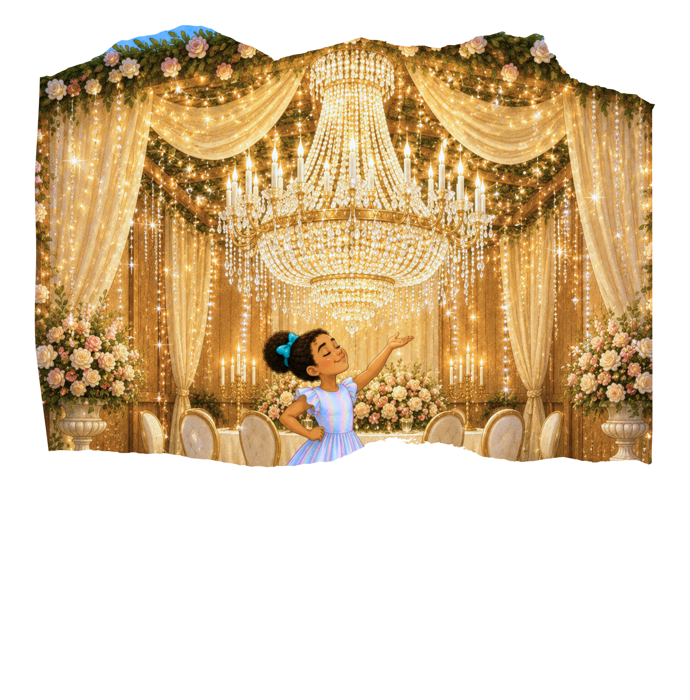
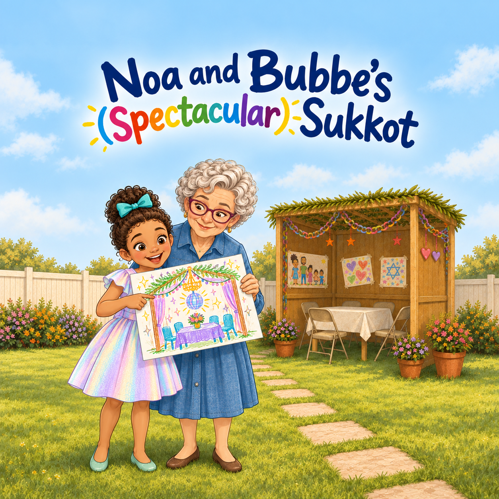
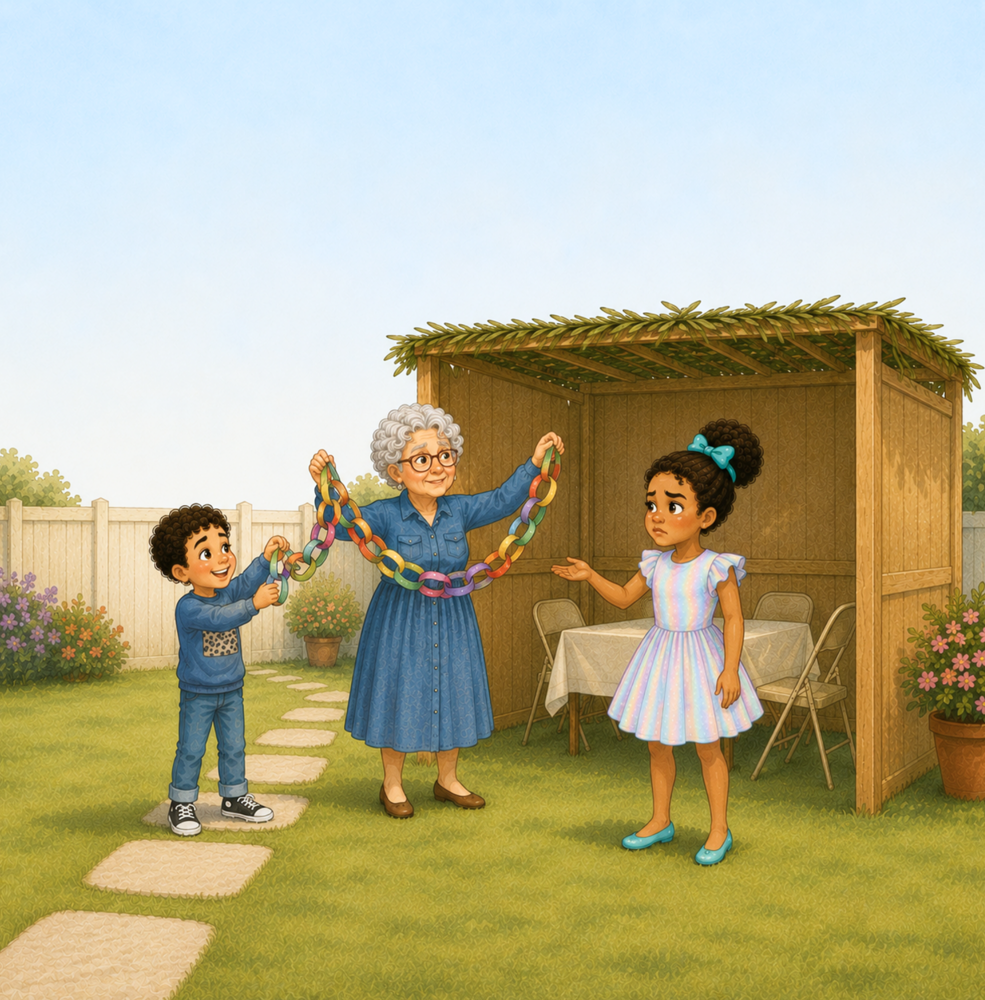
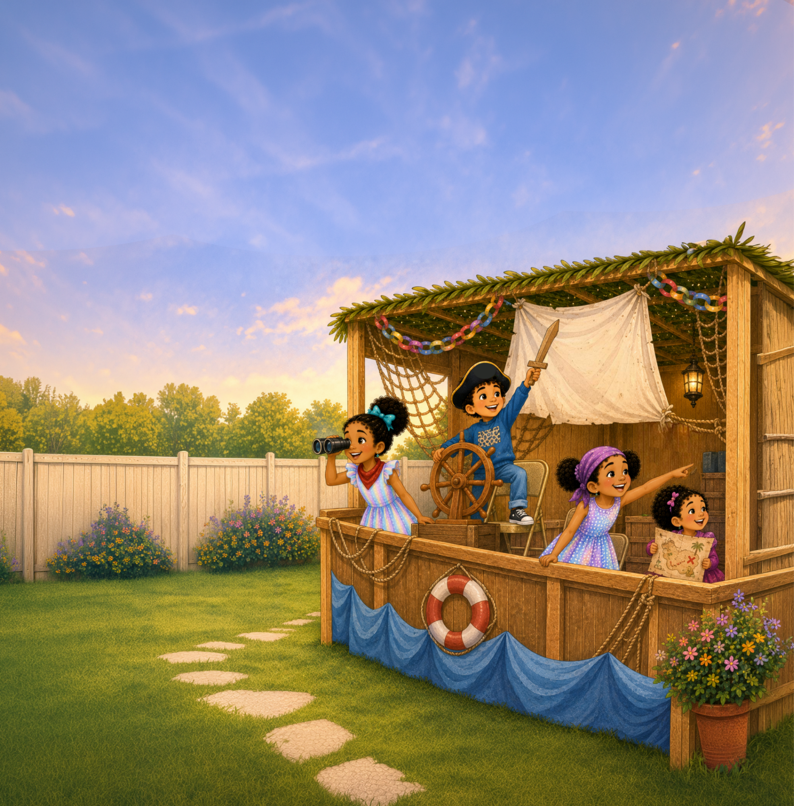
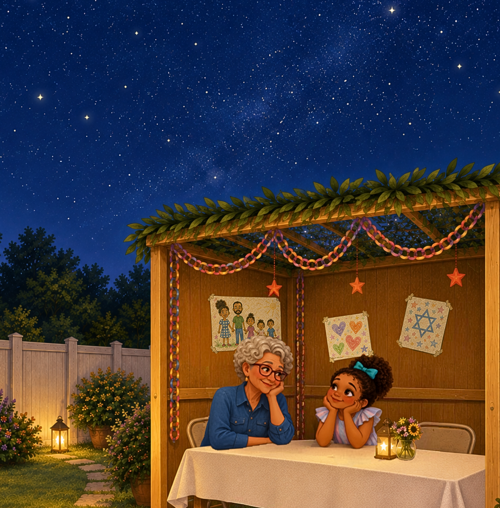
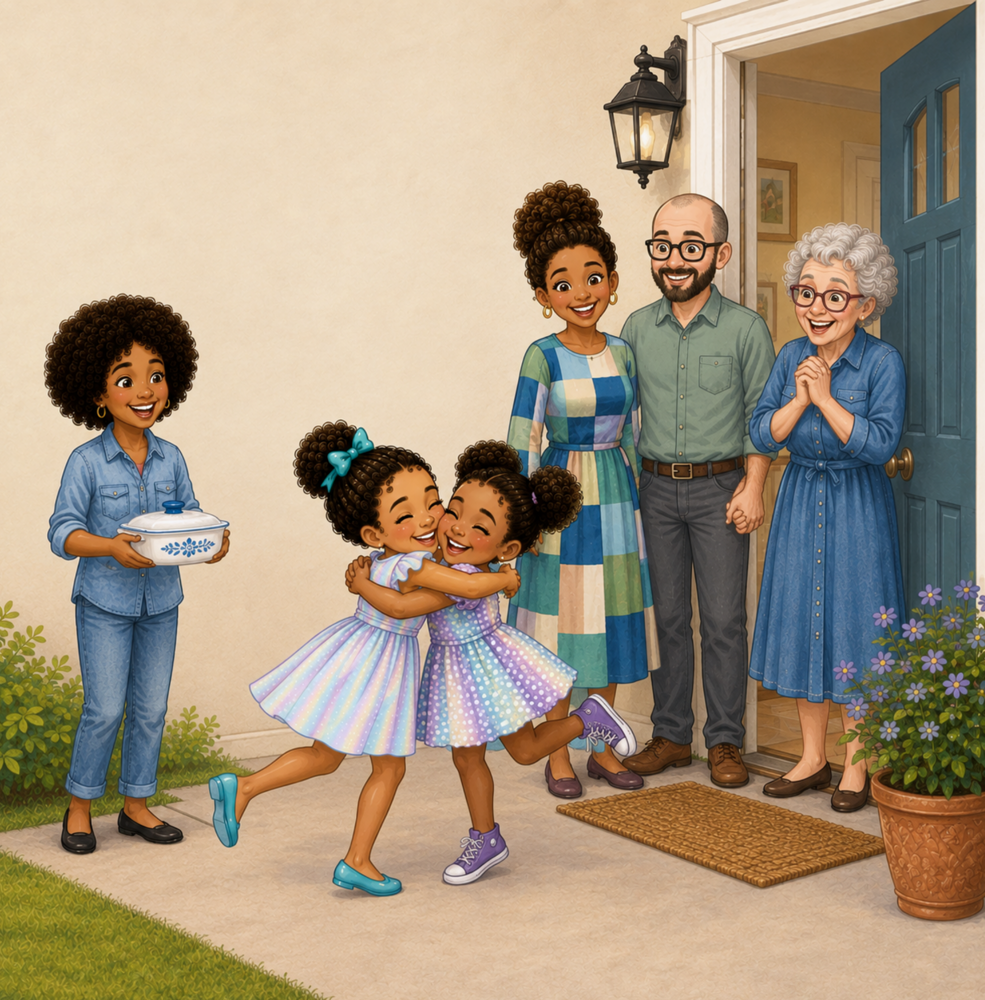

01
Dream something spectacular
Noa wants to impress her cousin Amira. She imagines a giant chandelier, a disco ball, and plenty of glitter for the family sukkah.
A Noa + Bubbe story
A joyful illustrated story about imagination, Sukkot traditions, family, and discovering what makes a celebration special.
Noa promises her cousin Amira a spectacular sukkah. But will paper chains and a roof of branches live up to her grand plans? With Bubbe, her siblings, and visiting family, Noa discovers something better than chandeliers or glitter.

Inside the story

Noa wants to impress her cousin Amira. She imagines a giant chandelier, a disco ball, and plenty of glitter for the family sukkah.

With Bubbe, Ezra, and Shira, Noa makes paper-chain decorations and learns about the sukkah’s branch-covered roof, the lulav, and the etrog.

When Amira arrives, the simple sukkah becomes a castle, then a pirate ship, and even a rocket through the children’s imaginative play.

After dinner with family and friends, Noa looks through the branches at the stars and realizes their sukkah is spectacular after all.
“We made it spectacular, Bubbe.”
— Noa
Themes in the book
Imagination and creativity. A simple sukkah becomes a castle, a pirate ship, and a rocket when children play together.
Tradition and learning. Bubbe introduces the sukkah’s special roof and the lulav and etrog as the family prepares for Sukkot.
Family and welcoming guests. Decorating, sharing a meal, and spending time with visiting relatives make the sukkah a place for connection.
Appreciating simple things. Noa discovers that the stars overhead and the people gathered around her are more special than extravagant decorations.
Families + Educators